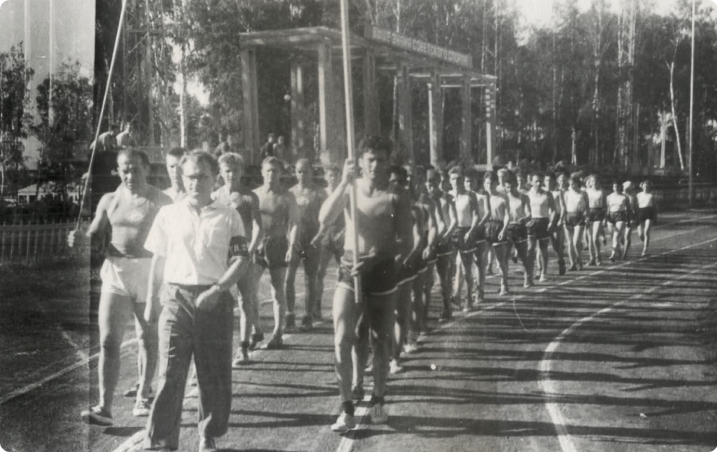

О клубе
С момента основания нашего города футбол стал одним из самых популярных видов спорта. В Обнинске была крепкая команда, которая состояла из работников ФЭИ, регулярно боролась за самые высокие места в Чемпионате и Кубке Калужской области. Матчи с футбольными коллективами области собирали огромное количество зрителей-трибуны старого стадиона «Труд» были всегда забиты под завязку.
Стадион был построен в 1958 году на месте старого деревянного здания школы-колонии «Бодрая жизнь» и несколько десятилетий был единственным стадионом Обнинска (второе профессиональное футбольное поле с искусственным покрытием находится в лицее «Держава»).В 1968 году была проведена капитальная реконструкция стадиона, в 2001 году, в соответствии с регламентом ПФЛ, были проведены работы по модернизации и увеличению количества мест для зрителей, после которых вместимость составила 3 978 человек.Покрытие стадиона — искусственное, удовлетворяющее стандартам УЕФА. В 2019 году будет постелено новое покрытие с подогревом.
Стадион находится в шаговой доступности и открыт для всех желающих для занятий спортом в свободное от проведения матчей СК «КВАНТ».Размеры поля: 105×68.Вместимость: 3 978 зрителей.
Наверное, самый важный этап становления обнинского футбола связан с приездом и плодотворной, полувековой работой заслуженного тренера России Юрия Алексеевича Шуванова — прекрасного человека и педагога, искренне преданного футболу, вырастившего почти четыре десятка профессиональных футболистов.К сожалению к концу 90-х, после экономических потрясений в стране, город практически потерял свои футбольные позиции, не было тренировочных полей и спортивных залов, школа занималась на пустыре улицы Любого, команда «КВАНТ» потеряла на много лет место в Чемпионате Калужской области.
Новый этапНовый этап развития футбола в Обнинске начался в 2003-05 годах. Группа неравнодушных к футболу людей, состоящая из руководителей городского спорта: директора МУП «Дворец Спорта» Силуянова Александра, председатель комитета по физической культуре и спорта Администрации города Яковлева Бориса, депутатов Городского собрания Комиссара Олега, Савина Владимира, Катухин Леонида, Председателя Городской федерации футбола Березнера Льва, братьев Морозовых, которые вернулись в свой родной город после завершения своей профессиональной карьеры, предложила программу развития футбола в Обнинске, которую поддержала Администрация города.
Эта долгосрочная программа развития включала в себя:
— Строительство современной футбольной инфраструктуры.
— Строительство многофункциональных спортивных площадок во дворах, где могли заниматься футболом все желающие.
— Развитие футбольной школы и выход ее на новый качественный уровень.
— Выстраивание полноценной футбольной Пирамиды.
За прошедшее время были претворены в жизнь: проекты строительства полноразмерного, одного из первого в области, футбольного поля и площадки с искусственным покрытием на стадионе лицея «Держава» в 2003 году. В 2012 году было построено новое поле на стадионе «Труд». В 2014 году установлена современная система освещения на стадионе «Держава». В 2019 году планируется устройство футбольного поля с системой подогрева и заменой покрытия на стадионе «Труд».За шестнадцать лет футбольная школа «КВАНТ» стала лидером в Калужской области, и одной из лучших школ Черноземья.
ДЮСШ «КВАНТ»- Чемпионы Финала МОА Черноземья 1993-95, 1999 г.р.
- Серебряные Призеры МОА Черноземья 1994 г.р.
- Спартакиада России ЦФО серебро 1991, 1992 г.р.Спартакиада России ЦФО Бронза 1995, 1999 г.р.
- Неоднократные Чемпионы области, победители зональных соревнований МОА «Черноземье», различных региональных турниров.
- 2006 г.: Чемпионат Калужской области – 2 место
- 2008 г.: Бронзовый призер Первенства России III дивизион (зона «Московская область» группа «Б»)
- 2011 г.: Обладатель Серебряного Кубка ФФМО (Кубок памяти В.А. Ефремова)2012г.: Серебрянный призер Первенства России III дивизион (зона «Московская область» группа «А»), Обладатель Серебряного Кубка ФФМО (турнир памяти В.А. Ефремова)
- 2014 г.: Чемпионат Калужской области – 2 место
- 2015 г.: Чемпионат Калужской области – 2 место
- 2016 г.: Чемпион Калужской области, Обладатель Серебряного Кубка ФФМО (турнир памяти В.А. Ефремова), Обладатель Кубка Губернатора Калужской области
- 2017 г.: Чемпион Первенства России III дивизион (зона «Московская область» группа «А»), Обладатель Серебряного Кубка ФФМО (турнир памяти В.А. Ефремова)
- 2018 г.: Обладатель Кубка ФФМО (турнир памяти В.А. Ефремова), Участик ОЛИМП Первенства и Кубка Росси по футболу среди клубов Профессиональной Футбольной Лиги (ПФЛ)
В 2017 году «КВАНТ» впервые в своей истории завоевал золотые медали Первенства России по футболу в 3 дивизионе зоны «Московская область». Команда получила право выступать на профессиональном уровне. В 2018 году при поддержке властей города был организован Спортивный клуб «КВАНТ», который был принят в Ассоциацию Профессиональных клубов Российского Футбольного Союза.Летом прошлого года «КВАНТ» стартовал в ОЛИМП Первенстве России среди профессиональных клубов (зона «ЦЕНТР»).
Фактически, «»КВАНТ» является долгосрочным городским проектом, который опирается на четыре составляющие:политическую – консолидированные решения депутатского корпуса и спортивной общественности;финансовую – поддержка Администрации города;профессиональную — опора на свои местные кадры;болельщицкую – в городе всегда любили футбол, приходят на него семьями, и в этом сезоне Обнинск побил несколько рекордов по посещаемости на стадионе «Труд».
Под руководством главных тренеров клуба Морозовых Олега и Алексея (лицензированные тренеры УЕФА) была собран достаточно боеспособная команда, которая успешно представляет город в профессиональном футболе. Девяносто процентов футболистов выпускников футбольной школы «КВАНТА» являются жителями Обнинска, остальные – жители Боровска, Калуги, Ермолино, Жукова, Белоусова.
Таким образом, за эти годы, с момента начала реализации программы развития футбола, в Обнинске была выстроена полноценная футбольная Пирамида.
Сегодня футбольная школа «КВАНТ» состоит из 11 команд, возраста от 7 до 18 лет. В ней плодотворно трудятся тренерами Серегин Игорь, Яковлев Александр, Тараканов Владимир, Березнер Дмитрий, Кобозев Эдуард.Кроме юношеских команд, которые учувствуют в Чемпионате и Кубке Калужской области, молодежная команда футбольного клуба «КВАНТ» полностью состоящая из своих воспитанников, находится на ведущих ролях в 3 дивизионе зоны «Московская область» группа «А».
Начала осуществляться мечта – команда мастеров (самые лучшие воспитанники школы) в нашем городе с полным городским стадионом – стартовала в Профессиональной Футбольной Лиге.